OCCCOSI-only: preparation pages3–19, model coupling table2 and stereochemical assignment49–50. Undetailed future Liebeskind route and Mosher derivatives remain boundaries. Facts compiled deterministically; independent review pending.
完整 JSON · 逐步 CSV · 路线序列 · SDF · HRMS 核对
| 事件 | 分子连接 | 报告产率 | Canonical reaction SMILES |
|---|---|---|---|
| E01 | S7 → S8 | not reported | OCCCO>>COc1ccc(COCCCO)cc1 |
| E02 | S8 → 2 | 2: 70% | COc1ccc(COCCCO)cc1>>COc1ccc(COCCC=O)cc1 |
| E03 | 2 + allyl-Grignard → S9 | not reported | C=C[CH2][Mg+].COc1ccc(COCCC=O)cc1>>C=CC[C@@H](O)CCOCc1ccc(OC)cc1 |
| E04 | S9 → S10 | not reported | C=CC[C@@H](O)CCOCc1ccc(OC)cc1>>C=CC[C@H](CCOCc1ccc(OC)cc1)O[Si](CC)(CC)CC |
| E05 | S10 → 3 | 3: 47% | C=CC[C@H](CCOCc1ccc(OC)cc1)O[Si](CC)(CC)CC>>CC[Si](CC)(CC)O[C@H](CC=O)CCOCc1ccc(OC)cc1 |
| E06 | 2 + phosphonoacetate → S11 | not reported | CCOC(=O)CP(=O)(OCC)OCC.COc1ccc(COCCC=O)cc1>>CCOC(=O)/C=C/CCOCc1ccc(OC)cc1 |
| E07 | S11 → S12 | S12: 94% | CCOC(=O)/C=C/CCOCc1ccc(OC)cc1>>COc1ccc(COCC/C=C/CO)cc1 |
| E08 | S12 → S13 | not reported | COc1ccc(COCC/C=C/CO)cc1>>COc1ccc(COCCC2OC2CO)cc1 |
| E09 | S13 → S14 | not reported | COc1ccc(COCCC2OC2CO)cc1>>COc1ccc(COCC[C@@H](O)CCO)cc1 |
| E10 | S14 → S15 | S15: 54% | COc1ccc(COCC[C@@H](O)CCO)cc1>>COc1ccc(COCC[C@@H](O)CCOC(=O)C(C)(C)C)cc1 |
| E11 | S15 → S16 | not reported | COc1ccc(COCC[C@@H](O)CCOC(=O)C(C)(C)C)cc1>>CC[Si](CC)(CC)O[C@H](CCOCc1ccc(OC)cc1)CCOC(=O)C(C)(C)C |
| E12 | S16 → S17 | not reported | CC[Si](CC)(CC)O[C@H](CCOCc1ccc(OC)cc1)CCOC(=O)C(C)(C)C>>CC[Si](CC)(CC)O[C@@H](CCO)CCOCc1ccc(OC)cc1 |
| E13 | S17 → ent-3 | ent-3: 76% | CC[Si](CC)(CC)O[C@@H](CCO)CCOCc1ccc(OC)cc1>>CC[Si](CC)(CC)O[C@@H](CC=O)CCOCc1ccc(OC)cc1 |
| E14 | 3 + isopropenyl-bromide → 5 | 59% combined mixture yield | C=C(C)Br.CC[Si](CC)(CC)O[C@H](CC=O)CCOCc1ccc(OC)cc1>>C=C(C)C(O)C[C@H](CCOCc1ccc(OC)cc1)O[Si](CC)(CC)CC |
| E15 | 5 → 6 | not reported | C=C(C)C(O)C[C@H](CCOCc1ccc(OC)cc1)O[Si](CC)(CC)CC>>CC[Si](CC)(CC)O[C@@H](CCOCc1ccc(OC)cc1)CC(O)C(C)O |
| E16 | 6 → S18 | not reported | CC[Si](CC)(CC)O[C@@H](CCOCc1ccc(OC)cc1)CC(O)C(C)O>>CC[Si](CC)(CC)OC(C)C(O)C[C@H](CCOCc1ccc(OC)cc1)O[Si](CC)(CC)CC |
| E17 | S18 → 7 | 59% combined mixture yield | CC[Si](CC)(CC)OC(C)C(O)C[C@H](CCOCc1ccc(OC)cc1)O[Si](CC)(CC)CC>>CC[Si](CC)(CC)OC(C)C(=O)C[C@H](CCOCc1ccc(OC)cc1)O[Si](CC)(CC)CC |
| ent-E14 | ent-3 + isopropenyl-bromide → ent-5 | not reported | C=C(C)Br.CC[Si](CC)(CC)O[C@@H](CC=O)CCOCc1ccc(OC)cc1>>C=C(C)C(O)C[C@@H](CCOCc1ccc(OC)cc1)O[Si](CC)(CC)CC |
| ent-E15 | ent-5 → ent-6 | not reported | C=C(C)C(O)C[C@@H](CCOCc1ccc(OC)cc1)O[Si](CC)(CC)CC>>CC[Si](CC)(CC)O[C@H](CCOCc1ccc(OC)cc1)CC(O)C(C)O |
| ent-E16 | ent-6 → ent-S18 | not reported | CC[Si](CC)(CC)O[C@H](CCOCc1ccc(OC)cc1)CC(O)C(C)O>>CC[Si](CC)(CC)OC(C)C(O)C[C@@H](CCOCc1ccc(OC)cc1)O[Si](CC)(CC)CC |
| ent-E17 | ent-S18 → ent-7 | not reported | CC[Si](CC)(CC)OC(C)C(O)C[C@@H](CCOCc1ccc(OC)cc1)O[Si](CC)(CC)CC>>CC[Si](CC)(CC)OC(C)C(=O)C[C@@H](CCOCc1ccc(OC)cc1)O[Si](CC)(CC)CC |
| E18 | 7 → S19 | not reported | CC[Si](CC)(CC)OC(C)C(=O)C[C@H](CCOCc1ccc(OC)cc1)O[Si](CC)(CC)CC>>C=C(C[C@H](CCOCc1ccc(OC)cc1)O[Si](CC)(CC)CC)C(C)O[Si](CC)(CC)CC |
| E19 | S19 → 8 | not reported | C=C(C[C@H](CCOCc1ccc(OC)cc1)O[Si](CC)(CC)CC)C(C)O[Si](CC)(CC)CC>>C=C(C[C@H](CCO)O[Si](CC)(CC)CC)C(C)O[Si](CC)(CC)CC |
| E20 | 8 → 9 | 31% combined mixture yield | C=C(C[C@H](CCO)O[Si](CC)(CC)CC)C(C)O[Si](CC)(CC)CC>>C=C(C[C@H](CC=O)O[Si](CC)(CC)CC)C(C)O[Si](CC)(CC)CC |
| E21 | 9 + 12 → 13 | not reported | C=C(C[C@H](CC=O)O[Si](CC)(CC)CC)C(C)O[Si](CC)(CC)CC.CCCCC(=O)N1C(=O)OCC1Cc1ccccc1>>C=C(C[C@H](CC(O)C(CCC)C(=O)N1C(=O)OCC1Cc1ccccc1)O[Si](CC)(CC)CC)C(C)O[Si](CC)(CC)CC |
| E22 | 13 → S20 | not reported | C=C(C[C@H](CC(O)C(CCC)C(=O)N1C(=O)OCC1Cc1ccccc1)O[Si](CC)(CC)CC)C(C)O[Si](CC)(CC)CC>>C=C(C[C@H](CC(O)C(CO)CCC)O[Si](CC)(CC)CC)C(C)O[Si](CC)(CC)CC |
| E23 | S20 → 14a + 14b | 14a: 11%; 14b: 5.4% | C=C(C[C@H](CC(O)C(CO)CCC)O[Si](CC)(CC)CC)C(C)O[Si](CC)(CC)CC>>C=C(C[C@H](CC(O)C(CCC)COC(=O)c1ccccc1)O[Si](CC)(CC)CC)[C@@H](C)O[Si](CC)(CC)CC.C=C(C[C@H](CC(O)C(CCC)COC(=O)c1ccccc1)O[Si](CC)(CC)CC)[C@H](C)O[Si](CC)(CC)CC |
| E24a | 14a → S21a | not reported | C=C(C[C@H](CC(O)C(CCC)COC(=O)c1ccccc1)O[Si](CC)(CC)CC)[C@@H](C)O[Si](CC)(CC)CC>>CCCC(COC(=O)c1ccccc1)C1C[C@H](O[Si](CC)(CC)CC)CC(O)([C@@H](C)O[Si](CC)(CC)CC)O1 |
| E25a | S21a → 15a | 15a: 80% | CCCC(COC(=O)c1ccccc1)C1C[C@H](O[Si](CC)(CC)CC)CC(O)([C@@H](C)O[Si](CC)(CC)CC)O1>>CCCC(COC(=O)c1ccccc1)C1C[C@H](O)CC(O)([C@@H](C)O)O1 |
| E24b | 14b → S21b | not reported | C=C(C[C@H](CC(O)C(CCC)COC(=O)c1ccccc1)O[Si](CC)(CC)CC)[C@H](C)O[Si](CC)(CC)CC>>CCCC(COC(=O)c1ccccc1)C1C[C@H](O[Si](CC)(CC)CC)CC(O)([C@H](C)O[Si](CC)(CC)CC)O1 |
| E25b | S21b → 15b | 15b: 62% | CCCC(COC(=O)c1ccccc1)C1C[C@H](O[Si](CC)(CC)CC)CC(O)([C@H](C)O[Si](CC)(CC)CC)O1>>CCCC(COC(=O)c1ccccc1)C1C[C@H](O)CC(O)([C@H](C)O)O1 |
| E26 | ent-7 → S23 | not reported | CC[Si](CC)(CC)OC(C)C(=O)C[C@@H](CCOCc1ccc(OC)cc1)O[Si](CC)(CC)CC>>C=C(C[C@@H](CCOCc1ccc(OC)cc1)O[Si](CC)(CC)CC)C(C)O[Si](CC)(CC)CC |
| E27 | S23 → 30 | 83% combined mixture yield | C=C(C[C@@H](CCOCc1ccc(OC)cc1)O[Si](CC)(CC)CC)C(C)O[Si](CC)(CC)CC>>C=C(C[C@H](O)CCOCc1ccc(OC)cc1)C(C)O |
| E28 | 30 → 32 + 33 | 32: 36% | C=C(C[C@H](O)CCOCc1ccc(OC)cc1)C(C)O>>C=C(C[C@H](O)CCOCc1ccc(OC)cc1)[C@@H](C)OC(C)=O.C=C(C[C@H](O)CCOCc1ccc(OC)cc1)[C@H](C)O |
| E29 | 32 → S24 | S24: 89% | C=C(C[C@H](O)CCOCc1ccc(OC)cc1)[C@H](C)O>>C=C(C[C@@H](CCOCc1ccc(OC)cc1)OCOCc1ccccc1)[C@H](C)OCOCc1ccccc1 |
| E30 | S24 → S25 | S25: 87% | C=C(C[C@@H](CCOCc1ccc(OC)cc1)OCOCc1ccccc1)[C@H](C)OCOCc1ccccc1>>C=C(C[C@@H](CCO)OCOCc1ccccc1)[C@H](C)OCOCc1ccccc1 |
| E31 | S25 → 34 | 34: 83% | C=C(C[C@@H](CCO)OCOCc1ccccc1)[C@H](C)OCOCc1ccccc1>>C=C(C[C@@H](CC=O)OCOCc1ccccc1)[C@H](C)OCOCc1ccccc1 |
| E32 | 34 + ent-12 → 35 | not reported | C=C(C[C@@H](CC=O)OCOCc1ccccc1)[C@H](C)OCOCc1ccccc1.CCCCC(=O)N1C(=O)OCC1Cc1ccccc1>>C=C(C[C@@H](CC(O)C(CCC)C(=O)N1C(=O)OCC1Cc1ccccc1)OCOCc1ccccc1)[C@H](C)OCOCc1ccccc1 |
| E33 | 35 → 36 | 36: 58% | C=C(C[C@@H](CC(O)C(CCC)C(=O)N1C(=O)OCC1Cc1ccccc1)OCOCc1ccccc1)[C@H](C)OCOCc1ccccc1>>C=C(C[C@@H](CC(OCOCc1ccccc1)C(CCC)C(=O)N1C(=O)OCC1Cc1ccccc1)OCOCc1ccccc1)[C@H](C)OCOCc1ccccc1 |
| E34 | 36 → 37 | not reported | C=C(C[C@@H](CC(OCOCc1ccccc1)C(CCC)C(=O)N1C(=O)OCC1Cc1ccccc1)OCOCc1ccccc1)[C@H](C)OCOCc1ccccc1>>C=C(C[C@@H](CC(OCOCc1ccccc1)C(CO)CCC)OCOCc1ccccc1)[C@H](C)OCOCc1ccccc1 |
| E35 | 37 → 24 | 24: 39% | C=C(C[C@@H](CC(OCOCc1ccccc1)C(CO)CCC)OCOCc1ccccc1)[C@H](C)OCOCc1ccccc1>>C=C(C[C@@H](CC(OCOCc1ccccc1)C(C=O)CCC)OCOCc1ccccc1)[C@H](C)OCOCc1ccccc1 |
| E36 | 27 + isobutyryl-chloride → S22 | S22: 81% | CC(C)C(=O)Cl.Cc1c(O)cccc1O>>Cc1c(O)ccc(C(=O)C(C)C)c1O |
| E37 | S22 → 28 | 28: 85% | Cc1c(O)ccc(C(=O)C(C)C)c1O>>Cc1c(O)ccc(CC(C)C)c1O |
| E38 | 28 → 29 | 29: 94% | Cc1c(O)ccc(CC(C)C)c1O>>Cc1c(OCc2ccccc2)ccc(CC(C)C)c1OCc1ccccc1 |
| E39 | 29 → 26 | 26: 83% | Cc1c(OCc2ccccc2)ccc(CC(C)C)c1OCc1ccccc1>>Cc1c(OCc2ccccc2)c(Br)cc(CC(C)C)c1OCc1ccccc1 |
| E40 | 26 → S26 | S26: 52% | Cc1c(OCc2ccccc2)c(Br)cc(CC(C)C)c1OCc1ccccc1>>Cc1c(OCc2ccccc2)c(CC(C)C)cc(B2OC(C)(C)C(C)(C)O2)c1OCc1ccccc1 |
| E41 | S26 → 38 | 38: 51% | Cc1c(OCc2ccccc2)c(CC(C)C)cc(B2OC(C)(C)C(C)(C)O2)c1OCc1ccccc1>>Cc1c(OCc2ccccc2)c(CC(C)C)cc(B(O)O)c1OCc1ccccc1 |
| E42 | 38 + 40 → 41 | 41: 46% | CCCCC(=O)N(C)S(=O)(=O)c1ccc(C)cc1.Cc1c(OCc2ccccc2)c(CC(C)C)cc(B(O)O)c1OCc1ccccc1>>CCCCC(=O)c1cc(CC(C)C)c(OCc2ccccc2)c(C)c1OCc1ccccc1 |
| E43 | 41 → S27 | S27: 81% | CCCCC(=O)c1cc(CC(C)C)c(OCc2ccccc2)c(C)c1OCc1ccccc1>>CCCCC(=O)c1cc(CC(C)C)c(O)c(C)c1O |
| E44 | S27 → 46 | 46: 91% | CCCCC(=O)c1cc(CC(C)C)c(O)c(C)c1O>>CCCCC(=O)c1cc(CC(C)C)c(OC(=O)OCc2ccccc2)c(C)c1OC(=O)OCc1ccccc1 |
| E45 | 32 → S28 | S28: 94% | C=C(C[C@H](O)CCOCc1ccc(OC)cc1)[C@H](C)O>>C=C(C[C@@H](CCOCc1ccc(OC)cc1)OCc1ccccc1)[C@H](C)OCc1ccccc1 |
| E46 | S28 → S29 | not reported | C=C(C[C@@H](CCOCc1ccc(OC)cc1)OCc1ccccc1)[C@H](C)OCc1ccccc1>>C=C(C[C@@H](CCO)OCc1ccccc1)[C@H](C)OCc1ccccc1 |
| E47 | S29 → 47 | 47: 72% | C=C(C[C@@H](CCO)OCc1ccccc1)[C@H](C)OCc1ccccc1>>C=C(C[C@@H](CC=O)OCc1ccccc1)[C@H](C)OCc1ccccc1 |
| E48 | 46 + 47 → 48a + 48b | not reported | C=C(C[C@@H](CC=O)OCc1ccccc1)[C@H](C)OCc1ccccc1.CCCCC(=O)c1cc(CC(C)C)c(OC(=O)OCc2ccccc2)c(C)c1OC(=O)OCc1ccccc1>>C=C(C[C@@H](CC(O)C(CCC)C(=O)c1cc(CC(C)C)c(OC(=O)OCc2ccccc2)c(C)c1OC(=O)OCc1ccccc1)OCc1ccccc1)[C@H](C)OCc1ccccc1.C=C(C[C@@H](CC(O)C(CCC)C(=O)c1cc(CC(C)C)c(OC(=O)OCc2ccccc2)c(C)c1OC(=O)OCc1ccccc1)OCc1ccccc1)[C@H](C)OCc1ccccc1 |
| E49 | 48a + 48b → 49a + 49b | 49a: 36%; 49b: 11% | C=C(C[C@@H](CC(O)C(CCC)C(=O)c1cc(CC(C)C)c(OC(=O)OCc2ccccc2)c(C)c1OC(=O)OCc1ccccc1)OCc1ccccc1)[C@H](C)OCc1ccccc1.C=C(C[C@@H](CC(O)C(CCC)C(=O)c1cc(CC(C)C)c(OC(=O)OCc2ccccc2)c(C)c1OC(=O)OCc1ccccc1)OCc1ccccc1)[C@H](C)OCc1ccccc1>>CCC[C@@H](C(=O)c1cc(CC(C)C)c(OC(=O)OCc2ccccc2)c(C)c1OC(=O)OCc1ccccc1)[C@@H]1C[C@@H](OCc2ccccc2)C[C@@](O)([C@H](C)OCc2ccccc2)O1.CCC[C@H](C(=O)c1cc(CC(C)C)c(OC(=O)OCc2ccccc2)c(C)c1OC(=O)OCc1ccccc1)[C@H]1C[C@@H](OCc2ccccc2)C[C@@](O)([C@H](C)OCc2ccccc2)O1 |
| E50 | 49a → 1 | 1: 90% | CCC[C@H](C(=O)c1cc(CC(C)C)c(OC(=O)OCc2ccccc2)c(C)c1OC(=O)OCc1ccccc1)[C@H]1C[C@@H](OCc2ccccc2)C[C@@](O)([C@H](C)OCc2ccccc2)O1>>CCC[C@H](C(=O)c1cc(CC(C)C)c(O)c(C)c1O)[C@H]1C[C@@H](O)C[C@@](O)([C@H](C)O)O1 |
| MODEL1 | 42 + S2a → S6a | S6a: 89% | Cc1ccc(B(O)O)cc1.Cc1ccc(S(=O)(=O)N(Cc2c(F)c(F)c(F)c(F)c2F)C(=O)c2ccccc2)cc1>>Cc1ccc(C(=O)c2ccccc2)cc1 |
| MODEL2 | 42 + S2b → S6a | S6a: 90% | Cc1ccc(B(O)O)cc1.Cc1ccc(S(=O)(=O)N(CC(=O)OC(C)(C)C)C(=O)c2ccccc2)cc1>>Cc1ccc(C(=O)c2ccccc2)cc1 |
| MODEL3 | S1 + S2a → S6b | S6b: 74% | COc1ccc(B(O)O)c(OC)c1.Cc1ccc(S(=O)(=O)N(Cc2c(F)c(F)c(F)c(F)c2F)C(=O)c2ccccc2)cc1>>COc1ccc(C(=O)c2ccccc2)c(OC)c1 |
| MODEL4 | S1 + S2b → S6b | S6b: 59% | COc1ccc(B(O)O)c(OC)c1.Cc1ccc(S(=O)(=O)N(CC(=O)OC(C)(C)C)C(=O)c2ccccc2)cc1>>COc1ccc(C(=O)c2ccccc2)c(OC)c1 |
| MODEL5 | S1 + S2c → S6b | S6b: 45% | COc1ccc(B(O)O)c(OC)c1.Cc1ccc(S(=O)(=O)N(Cc2ccccc2)C(=O)c2ccccc2)cc1>>COc1ccc(C(=O)c2ccccc2)c(OC)c1 |
| MODEL6 | S1 + S2d → S6b | S6b: 54% | COc1ccc(B(O)O)c(OC)c1.COc1ccc(CN(C(=O)c2ccccc2)S(=O)(=O)c2ccc(C)cc2)cc1>>COc1ccc(C(=O)c2ccccc2)c(OC)c1 |
| MODEL7 | S1 + S2e → S6b | S6b: 27% | COc1ccc(B(O)O)c(OC)c1.Cc1ccc(S(=O)(=O)N(CC#N)C(=O)c2ccccc2)cc1>>COc1ccc(C(=O)c2ccccc2)c(OC)c1 |
| MODEL8 | S1 + S3a → S6c | not reported | COc1ccc(B(O)O)c(OC)c1.COc1ccc(CCC(=O)N(Cc2c(F)c(F)c(F)c(F)c2F)S(=O)(=O)c2ccc(C)cc2)cc1>>COc1ccc(CCC(=O)c2ccc(OC)cc2OC)cc1 |
| MODEL9 | S1 + S3b → S6c | S6c: 62% | COc1ccc(B(O)O)c(OC)c1.COc1ccc(CCC(=O)N(C)S(=O)(=O)c2ccc(C)cc2)cc1>>COc1ccc(CCC(=O)c2ccc(OC)cc2OC)cc1 |
| MODEL10 | 38 + 40 → 41 | 41: 46% | CCCCC(=O)N(C)S(=O)(=O)c1ccc(C)cc1.Cc1c(OCc2ccccc2)c(CC(C)C)cc(B(O)O)c1OCc1ccccc1>>CCCCC(=O)c1cc(CC(C)C)c(OCc2ccccc2)c(C)c1OCc1ccccc1 |
| MODEL11 | 42 + S5 → 44 | 44: 14% | CCCC(CCC)C(=O)N(C)S(=O)(=O)c1ccc(C)cc1.Cc1ccc(B(O)O)cc1>>CCCC(CCC)C(=O)c1ccc(C)cc1 |
| MODEL12 | 42 + S5 → 44 | 44: 16% | CCCC(CCC)C(=O)N(C)S(=O)(=O)c1ccc(C)cc1.Cc1ccc(B(O)O)cc1>>CCCC(CCC)C(=O)c1ccc(C)cc1 |
| MODEL13 | 42 + S5 → 44 | not reported | CCCC(CCC)C(=O)N(C)S(=O)(=O)c1ccc(C)cc1.Cc1ccc(B(O)O)cc1>>CCCC(CCC)C(=O)c1ccc(C)cc1 |
| MOSHER-15a-S | 15a → 15a-bis-S-MTPA | not reported | CCCC(COC(=O)c1ccccc1)C1C[C@H](O)CC(O)([C@@H](C)O)O1>>CCCC(COC(=O)c1ccccc1)C1C[C@H](OC(=O)[C@@](OC)(c2ccccc2)C(F)(F)F)CC(O)([C@@H](C)OC(=O)[C@@](OC)(c2ccccc2)C(F)(F)F)O1 |
| MOSHER-15a-R | 15a → 15a-bis-R-MTPA | not reported | CCCC(COC(=O)c1ccccc1)C1C[C@H](O)CC(O)([C@@H](C)O)O1>>CCCC(COC(=O)c1ccccc1)C1C[C@H](OC(=O)[C@](OC)(c2ccccc2)C(F)(F)F)CC(O)([C@@H](C)OC(=O)[C@](OC)(c2ccccc2)C(F)(F)F)O1 |
| MOSHER-15b-S | 15b → 15b-bis-S-MTPA | not reported | CCCC(COC(=O)c1ccccc1)C1C[C@H](O)CC(O)([C@H](C)O)O1>>CCCC(COC(=O)c1ccccc1)C1C[C@H](OC(=O)[C@@](OC)(c2ccccc2)C(F)(F)F)CC(O)([C@H](C)OC(=O)[C@@](OC)(c2ccccc2)C(F)(F)F)O1 |
| MOSHER-15b-R | 15b → 15b-bis-R-MTPA | not reported | CCCC(COC(=O)c1ccccc1)C1C[C@H](O)CC(O)([C@H](C)O)O1>>CCCC(COC(=O)c1ccccc1)C1C[C@H](OC(=O)[C@](OC)(c2ccccc2)C(F)(F)F)CC(O)([C@H](C)OC(=O)[C@](OC)(c2ccccc2)C(F)(F)F)O1 |
| MOSHER-32-S | 32 → 32-bis-S-MTPA | not reported | C=C(C[C@H](O)CCOCc1ccc(OC)cc1)[C@H](C)O>>C=C(C[C@@H](CCOCc1ccc(OC)cc1)OC(=O)[C@@](OC)(c1ccccc1)C(F)(F)F)[C@H](C)OC(=O)[C@@](OC)(c1ccccc1)C(F)(F)F |
| MOSHER-32-R | 32 → 32-bis-R-MTPA | not reported | C=C(C[C@H](O)CCOCc1ccc(OC)cc1)[C@H](C)O>>C=C(C[C@@H](CCOCc1ccc(OC)cc1)OC(=O)[C@](OC)(c1ccccc1)C(F)(F)F)[C@H](C)OC(=O)[C@](OC)(c1ccccc1)C(F)(F)F |
OCCCO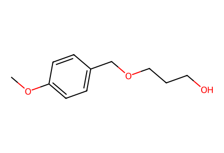
COc1ccc(COCCCO)cc1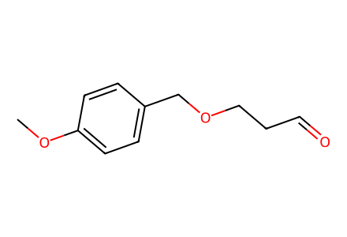
COc1ccc(COCCC=O)cc1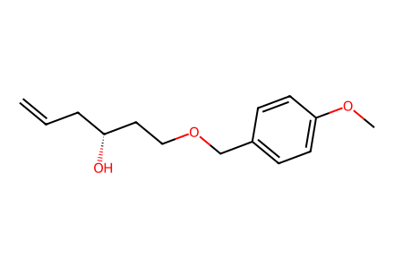
C=CC[C@@H](O)CCOCc1ccc(OC)cc1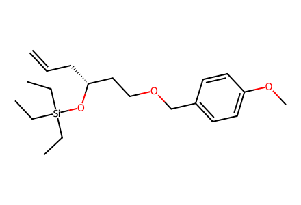
C=CC[C@H](CCOCc1ccc(OC)cc1)O[Si](CC)(CC)CC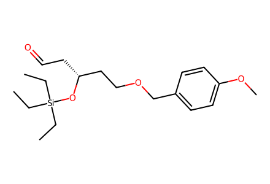
CC[Si](CC)(CC)O[C@H](CC=O)CCOCc1ccc(OC)cc1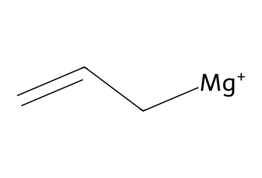
C=C[CH2][Mg+]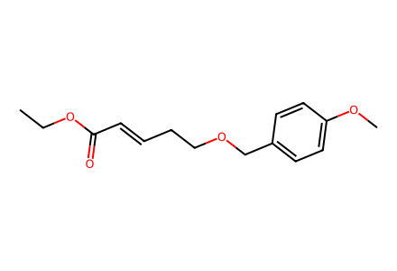
CCOC(=O)/C=C/CCOCc1ccc(OC)cc1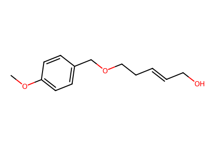
COc1ccc(COCC/C=C/CO)cc1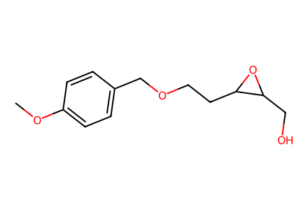
COc1ccc(COCCC2OC2CO)cc1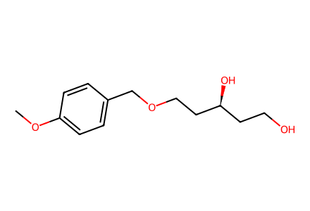
COc1ccc(COCC[C@@H](O)CCO)cc1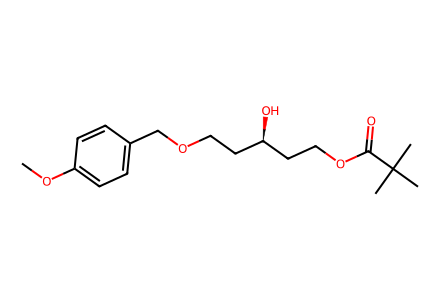
COc1ccc(COCC[C@@H](O)CCOC(=O)C(C)(C)C)cc1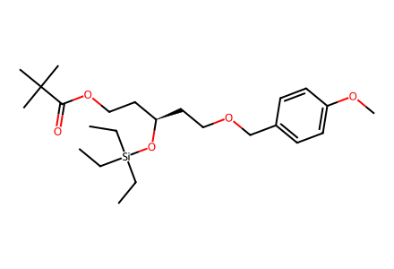
CC[Si](CC)(CC)O[C@H](CCOCc1ccc(OC)cc1)CCOC(=O)C(C)(C)C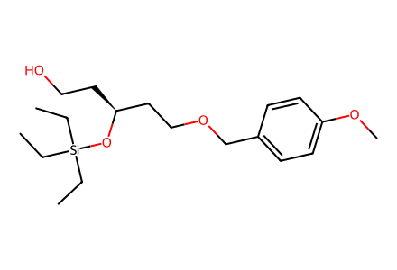
CC[Si](CC)(CC)O[C@@H](CCO)CCOCc1ccc(OC)cc1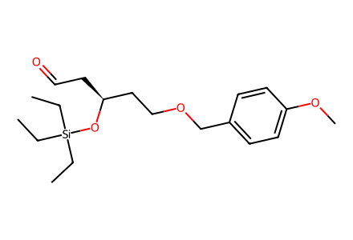
CC[Si](CC)(CC)O[C@@H](CC=O)CCOCc1ccc(OC)cc1
CCOC(=O)CP(=O)(OCC)OCC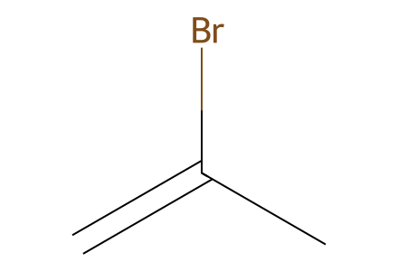
C=C(C)Br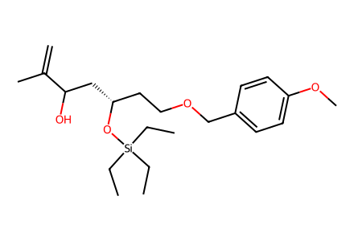
C=C(C)C(O)C[C@H](CCOCc1ccc(OC)cc1)O[Si](CC)(CC)CC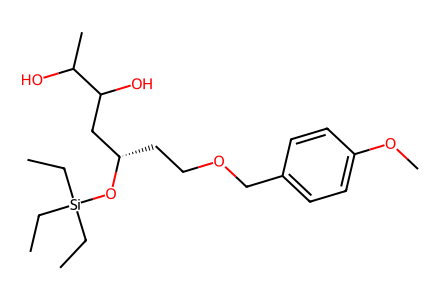
CC[Si](CC)(CC)O[C@@H](CCOCc1ccc(OC)cc1)CC(O)C(C)O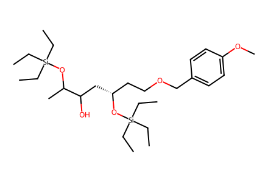
CC[Si](CC)(CC)OC(C)C(O)C[C@H](CCOCc1ccc(OC)cc1)O[Si](CC)(CC)CC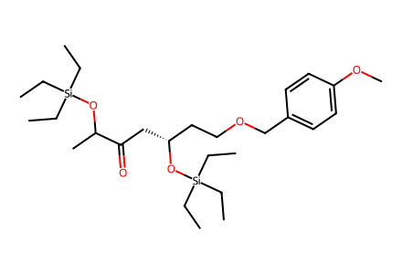
CC[Si](CC)(CC)OC(C)C(=O)C[C@H](CCOCc1ccc(OC)cc1)O[Si](CC)(CC)CC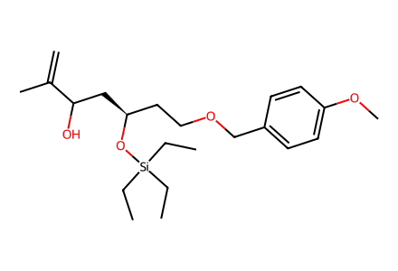
C=C(C)C(O)C[C@@H](CCOCc1ccc(OC)cc1)O[Si](CC)(CC)CC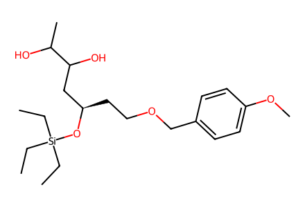
CC[Si](CC)(CC)O[C@H](CCOCc1ccc(OC)cc1)CC(O)C(C)O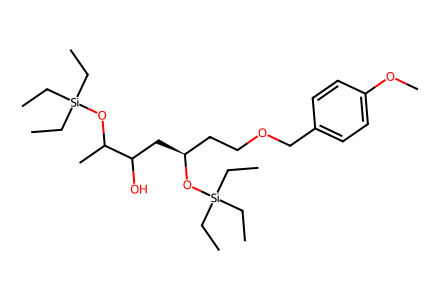
CC[Si](CC)(CC)OC(C)C(O)C[C@@H](CCOCc1ccc(OC)cc1)O[Si](CC)(CC)CCCC[Si](CC)(CC)OC(C)C(=O)C[C@@H](CCOCc1ccc(OC)cc1)O[Si](CC)(CC)CC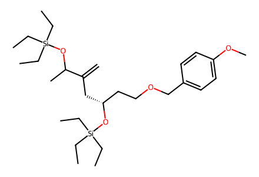
C=C(C[C@H](CCOCc1ccc(OC)cc1)O[Si](CC)(CC)CC)C(C)O[Si](CC)(CC)CC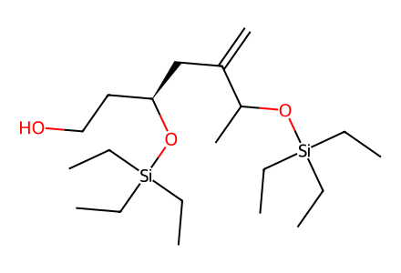
C=C(C[C@H](CCO)O[Si](CC)(CC)CC)C(C)O[Si](CC)(CC)CC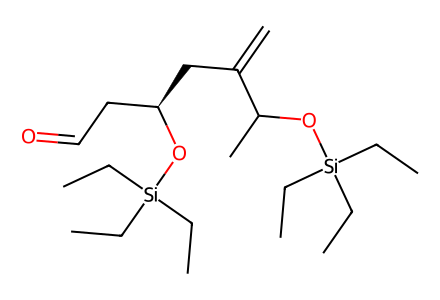
C=C(C[C@H](CC=O)O[Si](CC)(CC)CC)C(C)O[Si](CC)(CC)CC
CCCCC(=O)N1C(=O)OCC1Cc1ccccc1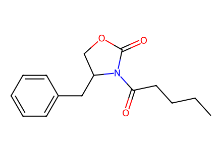
CCCCC(=O)N1C(=O)OCC1Cc1ccccc1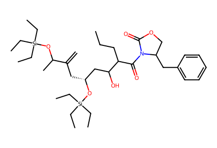
C=C(C[C@H](CC(O)C(CCC)C(=O)N1C(=O)OCC1Cc1ccccc1)O[Si](CC)(CC)CC)C(C)O[Si](CC)(CC)CC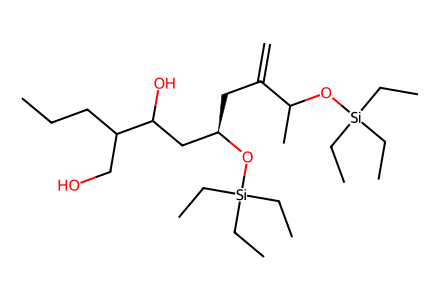
C=C(C[C@H](CC(O)C(CO)CCC)O[Si](CC)(CC)CC)C(C)O[Si](CC)(CC)CC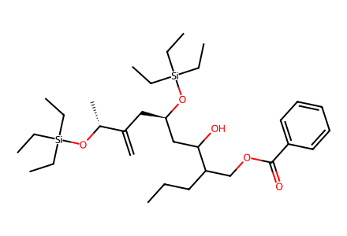
C=C(C[C@H](CC(O)C(CCC)COC(=O)c1ccccc1)O[Si](CC)(CC)CC)[C@@H](C)O[Si](CC)(CC)CC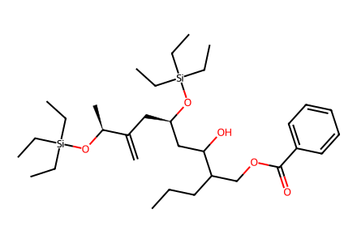
C=C(C[C@H](CC(O)C(CCC)COC(=O)c1ccccc1)O[Si](CC)(CC)CC)[C@H](C)O[Si](CC)(CC)CC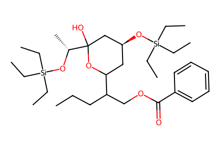
CCCC(COC(=O)c1ccccc1)C1C[C@H](O[Si](CC)(CC)CC)CC(O)([C@@H](C)O[Si](CC)(CC)CC)O1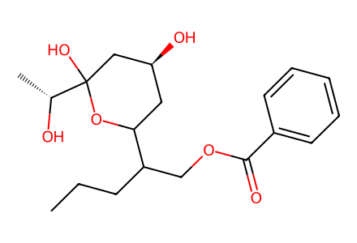
CCCC(COC(=O)c1ccccc1)C1C[C@H](O)CC(O)([C@@H](C)O)O1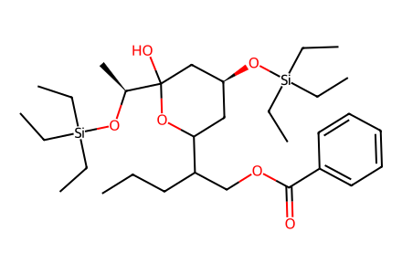
CCCC(COC(=O)c1ccccc1)C1C[C@H](O[Si](CC)(CC)CC)CC(O)([C@H](C)O[Si](CC)(CC)CC)O1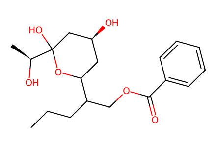
CCCC(COC(=O)c1ccccc1)C1C[C@H](O)CC(O)([C@H](C)O)O1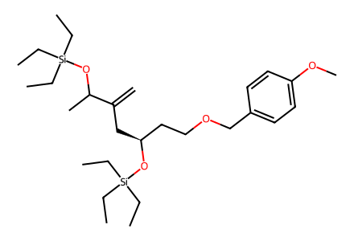
C=C(C[C@@H](CCOCc1ccc(OC)cc1)O[Si](CC)(CC)CC)C(C)O[Si](CC)(CC)CC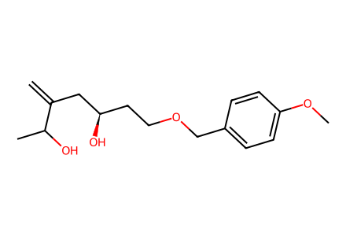
C=C(C[C@H](O)CCOCc1ccc(OC)cc1)C(C)O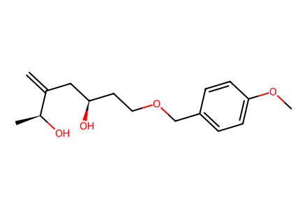
C=C(C[C@H](O)CCOCc1ccc(OC)cc1)[C@H](C)O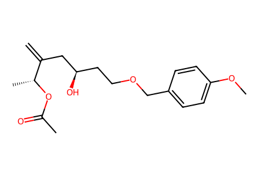
C=C(C[C@H](O)CCOCc1ccc(OC)cc1)[C@@H](C)OC(C)=O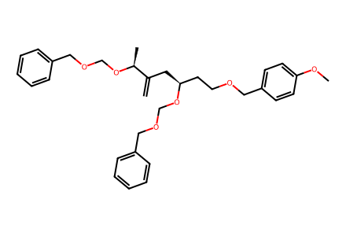
C=C(C[C@@H](CCOCc1ccc(OC)cc1)OCOCc1ccccc1)[C@H](C)OCOCc1ccccc1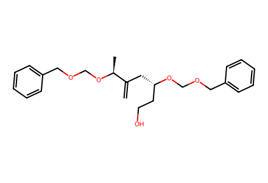
C=C(C[C@@H](CCO)OCOCc1ccccc1)[C@H](C)OCOCc1ccccc1C=C(C[C@@H](CC=O)OCOCc1ccccc1)[C@H](C)OCOCc1ccccc1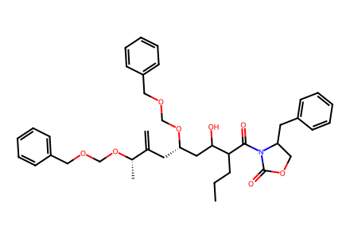
C=C(C[C@@H](CC(O)C(CCC)C(=O)N1C(=O)OCC1Cc1ccccc1)OCOCc1ccccc1)[C@H](C)OCOCc1ccccc1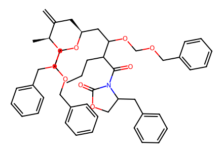
C=C(C[C@@H](CC(OCOCc1ccccc1)C(CCC)C(=O)N1C(=O)OCC1Cc1ccccc1)OCOCc1ccccc1)[C@H](C)OCOCc1ccccc1C=C(C[C@@H](CC(OCOCc1ccccc1)C(CO)CCC)OCOCc1ccccc1)[C@H](C)OCOCc1ccccc1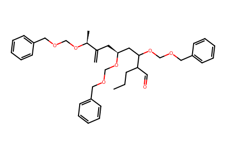
C=C(C[C@@H](CC(OCOCc1ccccc1)C(C=O)CCC)OCOCc1ccccc1)[C@H](C)OCOCc1ccccc1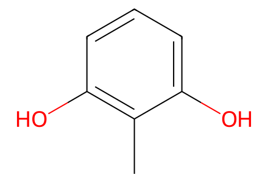
Cc1c(O)cccc1O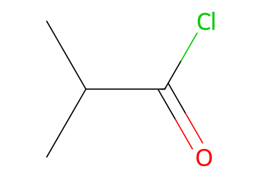
CC(C)C(=O)Cl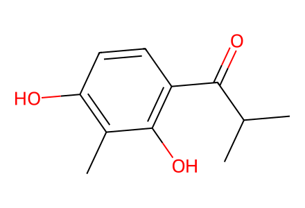
Cc1c(O)ccc(C(=O)C(C)C)c1O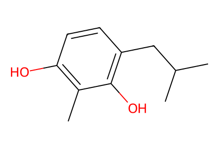
Cc1c(O)ccc(CC(C)C)c1O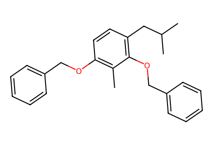
Cc1c(OCc2ccccc2)ccc(CC(C)C)c1OCc1ccccc1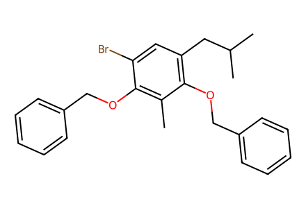
Cc1c(OCc2ccccc2)c(Br)cc(CC(C)C)c1OCc1ccccc1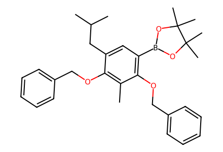
Cc1c(OCc2ccccc2)c(CC(C)C)cc(B2OC(C)(C)C(C)(C)O2)c1OCc1ccccc1Cc1c(OCc2ccccc2)c(CC(C)C)cc(B(O)O)c1OCc1ccccc1CCCCC(=O)N(C)S(=O)(=O)c1ccc(C)cc1CCCCC(=O)c1cc(CC(C)C)c(OCc2ccccc2)c(C)c1OCc1ccccc1CCCCC(=O)c1cc(CC(C)C)c(O)c(C)c1OCCCCC(=O)c1cc(CC(C)C)c(OC(=O)OCc2ccccc2)c(C)c1OC(=O)OCc1ccccc1C=C(C[C@@H](CCOCc1ccc(OC)cc1)OCc1ccccc1)[C@H](C)OCc1ccccc1C=C(C[C@@H](CCO)OCc1ccccc1)[C@H](C)OCc1ccccc1C=C(C[C@@H](CC=O)OCc1ccccc1)[C@H](C)OCc1ccccc1C=C(C[C@@H](CC(O)C(CCC)C(=O)c1cc(CC(C)C)c(OC(=O)OCc2ccccc2)c(C)c1OC(=O)OCc1ccccc1)OCc1ccccc1)[C@H](C)OCc1ccccc1
C=C(C[C@@H](CC(O)C(CCC)C(=O)c1cc(CC(C)C)c(OC(=O)OCc2ccccc2)c(C)c1OC(=O)OCc1ccccc1)OCc1ccccc1)[C@H](C)OCc1ccccc1CCC[C@H](C(=O)c1cc(CC(C)C)c(OC(=O)OCc2ccccc2)c(C)c1OC(=O)OCc1ccccc1)[C@H]1C[C@@H](OCc2ccccc2)C[C@@](O)([C@H](C)OCc2ccccc2)O1CCC[C@@H](C(=O)c1cc(CC(C)C)c(OC(=O)OCc2ccccc2)c(C)c1OC(=O)OCc1ccccc1)[C@@H]1C[C@@H](OCc2ccccc2)C[C@@](O)([C@H](C)OCc2ccccc2)O1CCC[C@H](C(=O)c1cc(CC(C)C)c(O)c(C)c1O)[C@H]1C[C@@H](O)C[C@@](O)([C@H](C)O)O1COc1ccc(B(O)O)c(OC)c1Cc1ccc(B(O)O)cc1Cc1ccc(S(=O)(=O)N(Cc2c(F)c(F)c(F)c(F)c2F)C(=O)c2ccccc2)cc1Cc1ccc(S(=O)(=O)N(CC(=O)OC(C)(C)C)C(=O)c2ccccc2)cc1Cc1ccc(S(=O)(=O)N(Cc2ccccc2)C(=O)c2ccccc2)cc1COc1ccc(CN(C(=O)c2ccccc2)S(=O)(=O)c2ccc(C)cc2)cc1Cc1ccc(S(=O)(=O)N(CC#N)C(=O)c2ccccc2)cc1COc1ccc(CCC(=O)N(Cc2c(F)c(F)c(F)c(F)c2F)S(=O)(=O)c2ccc(C)cc2)cc1COc1ccc(CCC(=O)N(C)S(=O)(=O)c2ccc(C)cc2)cc1CCCC(CCC)C(=O)N(C)S(=O)(=O)c1ccc(C)cc1Cc1ccc(C(=O)c2ccccc2)cc1COc1ccc(C(=O)c2ccccc2)c(OC)c1COc1ccc(CCC(=O)c2ccc(OC)cc2OC)cc1CCCC(CCC)C(=O)c1ccc(C)cc1CCCC(COC(=O)c1ccccc1)C1C[C@H](OC(=O)[C@@](OC)(c2ccccc2)C(F)(F)F)CC(O)([C@@H](C)OC(=O)[C@@](OC)(c2ccccc2)C(F)(F)F)O1CCCC(COC(=O)c1ccccc1)C1C[C@H](OC(=O)[C@](OC)(c2ccccc2)C(F)(F)F)CC(O)([C@@H](C)OC(=O)[C@](OC)(c2ccccc2)C(F)(F)F)O1CCCC(COC(=O)c1ccccc1)C1C[C@H](OC(=O)[C@@](OC)(c2ccccc2)C(F)(F)F)CC(O)([C@H](C)OC(=O)[C@@](OC)(c2ccccc2)C(F)(F)F)O1CCCC(COC(=O)c1ccccc1)C1C[C@H](OC(=O)[C@](OC)(c2ccccc2)C(F)(F)F)CC(O)([C@H](C)OC(=O)[C@](OC)(c2ccccc2)C(F)(F)F)O1C=C(C[C@@H](CCOCc1ccc(OC)cc1)OC(=O)[C@@](OC)(c1ccccc1)C(F)(F)F)[C@H](C)OC(=O)[C@@](OC)(c1ccccc1)C(F)(F)FC=C(C[C@@H](CCOCc1ccc(OC)cc1)OC(=O)[C@](OC)(c1ccccc1)C(F)(F)F)[C@H](C)OC(=O)[C@](OC)(c1ccccc1)C(F)(F)F